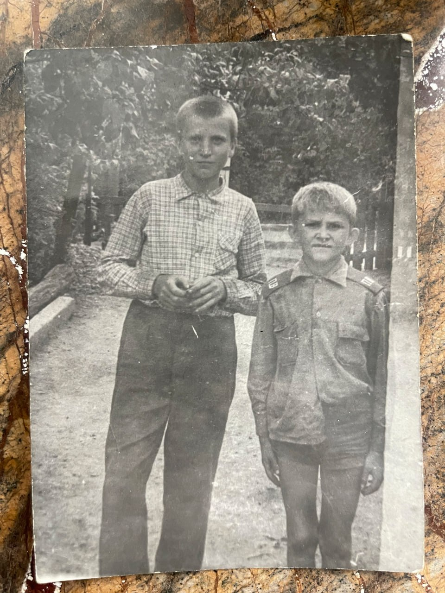
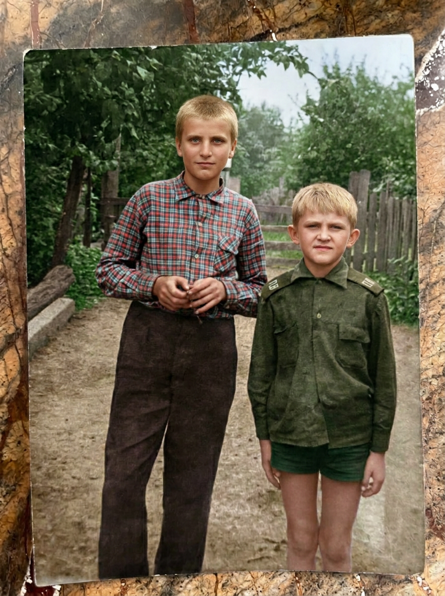

CF-FIRST research: CodeFormer f98 base → generative · 13 AFTER + COLOR v1 + 2 SKIP mask · BA = CF_BASE vs AFTER · FULL prompt + settings · отзыв per-model · copy/download JSON · ← Path A WORKING_DEFAULT (RAW)
nano_pro · flux2_max · seedream45 · firered_redo · FAIL invent_eyes: color_alive · grok · nano2 · seedream5 · flux2 · research only, не sellable / не conveyor
CF-FIRST (research only): CodeFormer f98 → generative edit. BA слева = CF_BASE (не сырой исходник). Честно: AFTER только реальные outs · Fill/Ideogram = SKIP (mask) · redo preferred when *_face_fail_redo · FACE_LOCK · TEST_UNCAP · HARD BAN pd_02_stains (ban-text only, фото не показываем) · never fake AFTER · NOT_CLAIMED: sellable / conveyor / PASS-all / etalon / GPU rent. UI: spend_E=0. Default = Path A RAW, не эта страница.
Важно: пластик CF переворачивает рейтинг vs RAW page — там kontext_max был TOP, здесь FACE_FAIL. TOP CF-first: nano_pro · flux2_max · seedream45 · firered_redo.


Навигация: chip · ←/→ или j/k · deep-link #model=nano_pro · Esc = показать все · BA left = CF_BASE
Markers: two-boys-cf-models14-review · data-two-boys-cf-review · data-cf-first="1" · data-pipeline-a="0" · data-cf-research="1" · nano-alt-two-boys-cf-research · research-only · nano-alt-eye-gaze-lock · data-eye-gaze-lock="1" · eye-gaze-lock · data-model-prompt · data-model-feedback · nano-alt-two-boys-cf-models14 · two-boys-cf-models14 · page-review-ui · prompt · settings · feedback · comment · отзыв · localStorage · clipboard · CF-FIRST · FREE UI · NO_RENT · HARD BAN pd_02_stains · TEST_UNCAP · spend_E=0 UI